Stargate Agent Monitor
A miniature Stargate that shows, at a glance from across the room, which of your Claude Code sessions are working — and which are stopped, waiting on you. Other agents (Codex and friends) are planned.
What this is
Every live Claude Code session owns an arc of a 24-LED ring. Comets mean leave it alone; pulses mean it wants you. No wrapper script, no daemon, no USB tether — the ESP32 is the webhook endpoint.
Claude Code has a native "type": "http" hook that POSTs each event's JSON straight to a URL. The board runs a tiny MicroPython HTTP server on the LAN, reads only session_id and hook_event_name from each payload, keeps a session registry, and paints the ring at ~33 fps. Multiple machines can point at the same ring — session IDs are UUIDs, so they simply appear as more arcs.
The device then gets a home: a Stargate on an SGC-style dock. A round Waveshare ESP32-S3 AMOLED touchscreen is the gate's centre, the LED ring is the gate's illuminated inner track behind 24 individual windows over a frosted diffuser, and the whole gate floats above the pedestal so all 360° of LEDs stay visible — including 6 o'clock. Nine red chevrons, 39 glyphs, running-bond stonework on the pedestal. Fully parametric OpenSCAD, verified coupon-first.
What the ring says
Motion carries the same information as colour, independently — the ring stays readable in a glance too brief to register hue.
- workingcyan · quick cometactively processing your turn
- backgroundviolet · slow cometagents running — wants nothing from you
- inputhot pink · slow pulseturn finished — awaiting your next prompt
- attentionpink-red · fast pulsepermission prompt or explicit request for input
- donewhite · fading outsession ended
- idlesingle dim pixel creepingno sessions — powered and connected
The simulation above is a direct port of ring.py's render loop (default vapor theme): same comet/pulse maths, same per-arc antiphase stagger, same one-dark-LED separator between sessions. Click a state to hold it; leave it alone and it walks a realistic day.
Themes
THEME in config.py picks a palette. Whatever the theme, one rule holds: states that want you are warm, states that don't are cool.
| Theme | working | background | input | attention | Notes |
|---|---|---|---|---|---|
vapor (default) | cyan | violet | hot pink | pink-red | prettiest, least legible — attention leans on its fast pulse |
neon | cyan | spring green | hot pink | red | the compromise |
classic | blue | green | amber | red | most legible, dullest |
A dict overrides individual states, merged over classic: THEME = {"input": (255, 0, 200)}. An unknown theme name logs a warning and falls back — a typo in config should dim the lights, not take an unattended device's HTTP server down on boot.
With two sessions each gets half the ring; three, a third. Arcs are ordered by first-seen so an arc never jumps position while you're looking at it. Neighbouring arcs get a dark separator LED and are staggered in antiphase so two pink arcs don't breathe as one.
How it works
Events consumed
| Hook event | Effect |
|---|---|
SessionStart, UserPromptSubmit | working (and resets the pending counter + background window) |
Stop | input |
Notification · permission_prompt, agent_needs_input, elicitation_dialog | attention |
Notification · idle_prompt, agent_completed | input |
SessionEnd | done |
SubagentStart, TaskCreated / SubagentStop, TaskCompleted | pending ±1 and refresh the background window |
Background work vs. waiting on you
A session that spawns background agents stops emitting foreground events — from outside that looks identical to a session sitting idle. Two mechanisms stop the ring crying wolf:
idle_promptis not red. It means "quiet a while", which is exactly what background work looks like. Red is reserved for notifications that genuinely block.- A recency window, not a counter. In the field
SubagentStartwas observed firing once against elevenSubagentStops. So any background event refreshes aBACKGROUND_HOLD_MSwindow (90 s); a stream of stops is itself evidence agents are running. Cleared onUserPromptSubmit.attentionoverrides the window entirely.
Known imperfection: if a turn's background work finishes and you don't reply, the arc stays violet for up to 90 s before falling back to pink.
Reliability & privacy
- Ring off: connections refused instantly; Claude Code treats that as non-blocking. Hooks use
timeout: 5, not the 600 s default. - Sessions that die silently:
workingexpires after 1 h (a real one firesStopeventually);input/attentionafter 4 h — that's the state worth showing. Unknown IDs re-register on arrival, so over-eager pruning is cheap. - WiFi drops: re-associated every 30 s. Reboot mid-session: repopulates on the next event.
/hookalways answers 200 with an empty body — a 2xx with text would be fed back into your conversation as context.- Payloads carry prompt text,
cwd, transcript paths. Onlysession_idandhook_event_nameare ever read; nothing is stored or logged. - Plaintext on the LAN;
TOKENis a light guard, not security. Never port-forward it. Off-LAN machines go via Tailscale/VPN.
Endpoints
| Method | Path | Purpose |
|---|---|---|
POST | /hook | hook payload from Claude Code |
GET | / | session states as JSON — state, raw_state, pending, expires_in_ms |
GET | /health | liveness |
GET | /events | last 40 events (metadata only) — trace a surprising colour to its cause |
POST | /clear | forget all sessions |
Materials
Two boards appear here on purpose. The Stargate is built around the Waveshare round-screen puck, which runs the console/ firmware and drives the ring from its rear header. The Keyestudio WROOM is only for the original ring-only build (MicroPython, repo root) and isn't needed for the Stargate.
Electronics
| Item | Spec | Role |
|---|---|---|
| Waveshare ESP32-S3-Touch-AMOLED-1.75-B | SKU 31262 · Ø51.00 × 12.10 mm cased · Ø43.76 touch area · side USB-C · rear 8-pin 2.54 mm female header · MX1.25 speaker + battery · PMU | The gate's centre and the brain (console/ firmware) |
| Keyestudio ESP32-WROOM-32E | MicroPython ESP32_GENERIC | Optional: the original ring-only build, main.py/ring.py (GPIO13) |
| WS2812B ring, 24 LED | Jaycar XC4385 · OD 72 / ID 60 / 7 wide · 3.5 mm PCB+LED stack · flying leads exit sideways, in-plane | The gate's inner track measured |
| USB-C extension, right-angle M→F | 0.3 m | Puck port → base rear-wall port; keeps cable tugs off the puck's soldered connector and lets the gate lift off the base |
| 5 V USB supply + cable | ≥ 500 mA | Whole ring ≈ 150 mA at BRIGHTNESS = 24 (~9 %). Full white would be ~1.4 A — don't raise brightness on USB power |
| Hook-up wire ×3 | ~15 cm, to 2.54 mm header | 5V, GND, Din from the puck's rear header (or the WROOM's pins) to the ring's leads |
| 1N5822 Schottky diode + 330 Ω 0.5 W resistor | axial, one each | In-line signal conditioning: diode in the 5 V lead (stripe toward the ring), resistor in the data lead at the ring end — see wiring |
Fasteners & small parts
| Item | Qty | Where |
|---|---|---|
| M2 heat-set inserts, brass, OD 3.2 × L3–4 (5 mm deep bosses) | 14 | gate_rear front face ×4 (front plate) · gate_rear back face ×4 (rear cover) + ×2 (pillar retention) · base_main ×4 (bottom cover). coupon A |
| M2 × 8 pan-head screws | 4 | group A: gate_front → gate_rear, at 45/135/225/315°. 4.0 mm under the counterbore + 4 into the insert — stack-ups confirm |
| M2 × 10 countersunk screws | 4 | group B: rear_cover → gate_rear at r 40, angles 30/150/225/315° (v2; asymmetric — only fits one way). CSK 4.4 × 1.2; the shank crosses the cover's 4.2 mm cavity confirm |
| M2 × 20 pan-head screws | 2 | group C: through each rear pillar (10 mm), the cover floor and cavity (6 mm), into gate_rear's back-face inserts — the gate's only retention confirm |
| M2 × 6 pan-head screws | 4 | group D: base_bottom (2 mm plate) → base_main shelf inserts |
| 1.75 mm filament offcuts | 19 | 18 chevron pins (Ø2 × 2.5, two per chevron) + 1 registration pin (Ø2 × 3, gate_rear front @ 95°). CA glue |
| Rubber feet | 4 | recesses in base_bottom |
Filament
| Colour | Material | Parts |
|---|---|---|
Grey (#6E6E6E-ish) | PLA+ or PETG | gate_front face, gate_rear, rear_cover |
| Black | same, via AMS | glyph "ink" — the bottom 0.5 mm of each 0.7 mm engraving, printed as a second solid |
| Dark grey | PLA+ or PETG | base_main, base_bottom |
| Red | PLA+ | chevron ×9 |
| Translucent / natural | PETG | diffuser — frosted after printing with 400–600 grit |
Tools
- Bambu H2D (or any 0.4 mm FDM); AMS or a second nozzle for the two-colour front, otherwise the single-colour fallback STL
- Soldering iron with a heat-set insert tip; hex/Phillips driver for M2
- Calipers — every dimension in
config.scadis markedCONFIRMEDorPROVISIONAL, and provisional ones get measured before the next print - 400–600 grit paper (diffuser frost), side cutters (filament pins), CA glue
- Software: OpenSCAD 2021.01 + BOSL2, Python 3 (trimesh, manifold3d for the mesh gates), Bambu Studio,
esptool,mpremote
The Stargate
Layered front, centre out: screen → inner bezel → 24-window LED track over a continuous diffuser → glyph track → outer mechanical ring → nine chevrons. Behind it, a structural shell and a dish; below it, an SGC dock that carries the gate from underneath and behind so nothing crosses the ring.
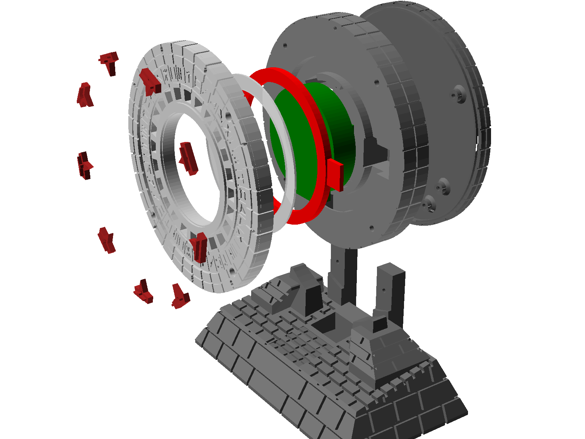
Parts
| Part | Role | Key geometry |
|---|---|---|
gate_front | Decorative face + retaining bezel | Ø110 × 6. Screen opening Ø49.75 (bears on the puck's case rim, never the glass); 24 windows at 15° pitch, mullions on the dark gaps between LEDs; engraved 39-glyph band; raised outer ring; 36 rim grooves; 18 chevron pin holes; 4 M2 counterbores; 1 registration pin hole @ 85° |
gate_rear | Structural shell — everything mounts to it | Ø110 × 14. Screen pocket Ø51.5 × 13.2 with three 0.2 mm crush ribs on the floor + two wall reliefs for the puck's side buttons (11 & 1 o'clock); LED pocket OD 74 / ID 58 / 4.3 deep; 14 mm lead through-slot at 3 o'clock; header cavity; USB tunnel 16 × 10 at 6 o'clock — the only rim opening; 10 heat-set bosses; recessed registration groove on the back; rim brick grooves phase-locked to the front and cover |
diffuser | Hides the raw PCB, spreads each LED into its window | OD ~73 / ID ~59.5 / 1.0 mm translucent PETG, frosted; sits 0.2 mm proud of the pocket so the front plate preloads it |
rear_cover | Sealed dish over the wire zone | Ø110 × 6, 1.8 walls; 4× M2 countersunk; a plain 1.3 mm registration lip on an internal 45° shoulder drops into gate_rear's groove — self-centres, and skips the USB arc so it can only go on one way; same 36-groove brickwork as the other two so the 26 mm stack reads as one drum. v2: six internal Ø6 guide bosses — at the four cover screws and both pillar pass-throughs — continue the screw bores across the dish's open interior: no screw can wander off its hidden insert, and heads clamp a 5.7 mm column instead of the bare 1.8 mm floor (tips 0.3 clear of gate_rear, so seating stays lip-defined) |
chevron ×9 | The Stargate's chevrons | Pin-on with two Ø2 filament pins each at 40° pitch, one at 6 o'clock on the dock's centreline (v2, 2026-08-20 — was 12); body bridges the two front screws that sit 5° off the chevron centrelines |
base_main | SGC dock | 135 × 75 × 30 four-sided planar-taper pedestal, top deck sloping 8 mm rear→front; two cradle lugs at ±30° off bottom (concave-cut to the ring's radius, 0.25 mm running clearance); two rear pillars with straight M2 bores; two cosmetic buttress flanks hard-cut Ø114 clear of the ring; internal cavity, USB drop slot, 16 × 14 × 12 rear-wall cable port; running-bond stone courses wrapping all four corners, ramp treads, panel lines. v2 styling pass: no bottom plinth lip (the wall runs straight to the bed), deck brickwork extended to the side arrises and over them to meet the wall courses, and the flanks coursed on their front/rear faces as well as the cap |
base_bottom | Pedestal floor | 4× M2 into inserts; rubber-feet recesses |
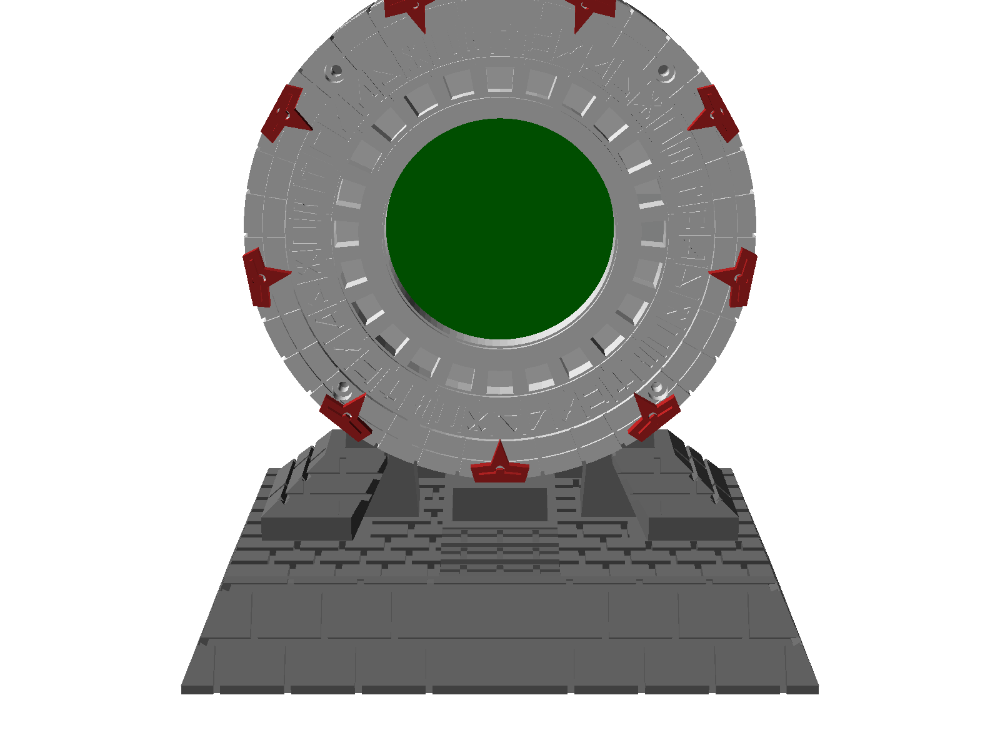
tests.scad assert, not a hope.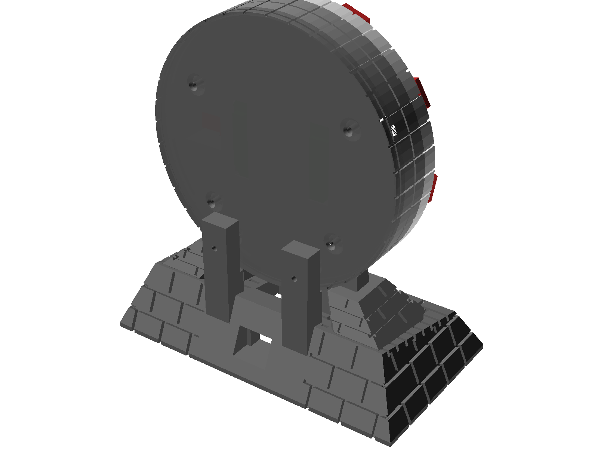
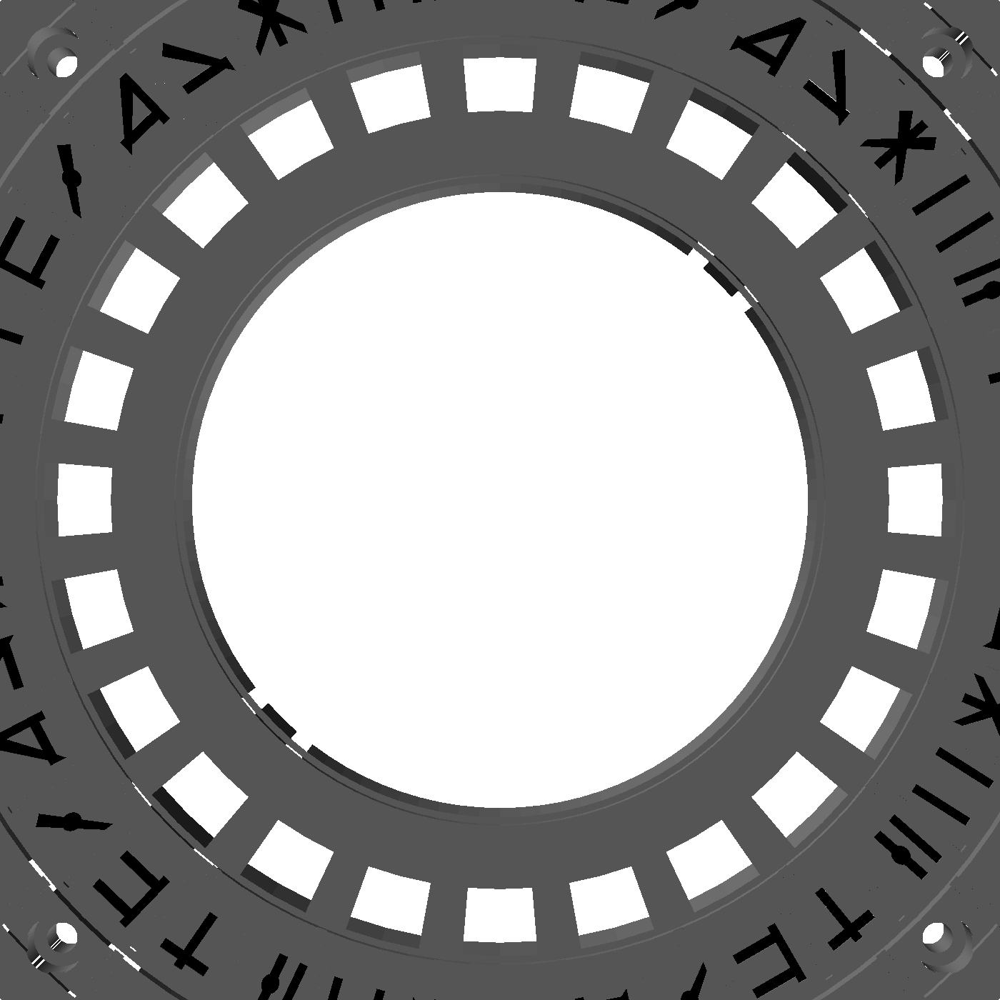
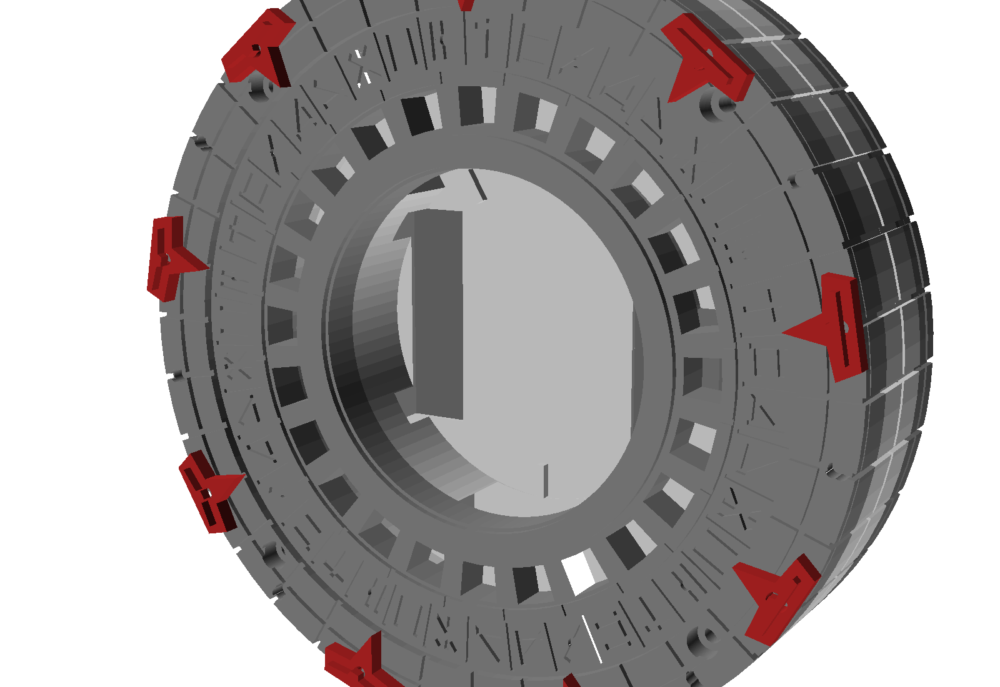
rim_grooves() module in decor.scad — front, rear and cover can't drift out of phase.Decisions that shaped it
The full ledger (22 numbered decisions, with the why) is enclosure/DESIGN.md. The ones that matter if you're modifying it:
- Gate floats; the dock never crosses the ring. Carried from below (two cradle lugs) and behind (two pillars). Buttresses, tabs, sockets and a rear spine were all designed, rendered, and deleted once they crowded the 4/8 o'clock chevrons or turned out vestigial.
- Puck clocked USB-down. The screen image rotates in software, so the port drops invisibly into the base; the side buttons land at 11 & 1 behind the bezel with wall reliefs, no access slot.
- Crush ribs, not a retainer plate. Bezel↔floor already captures the puck; three ribs kill the 0.7 mm rattle. Nothing bears on glass.
- Leads exit sideways at 3 o'clock (the header side, shortest loop) — the brief's "15 mm below" was radial, not a droop. This shifts the firmware's LED origin by 6 firmware.
- Registration by lip-in-groove + one off-grid pin. The front plate's 4-fold screw pattern doesn't lock rotation on its own; a Ø2 filament pin at 95° does. The cover's own asymmetric screw set already does.
- Everything decorative is recessed (flat-print rule) and every relief cut is scoped inside its own part's
difference()— after a flank relief silently gutted the cradle floor from 2.71 to 0.70 mm without any gate noticing. - Donor STLs are reference only. The 220 mm German lamp model informed the look; every millimetre here is parametric and printable at 110 mm.
Printing
Files come out of enclosure/render.ps1 into enclosure/print/ (git-ignored, regenerated every run — nothing hand-edited). Regenerate rather than trusting a stale STL:
# one-time
winget install --id OpenSCAD.OpenSCAD
git clone --depth 1 https://github.com/BelfrySCAD/BOSL2.git enclosure/libs/BOSL2
# every time — checks .echo for ERROR, exports binary STL, counts shells, runs the mesh gates
cd enclosure; ./render.ps1Settings
| Setting | Value |
|---|---|
| Nozzle / layers | 0.4 mm · 0.16–0.20 mm (0.20 used for the coupons and gates) |
| Walls / infill | 3–4 walls · 15–20 % |
| Diffuser | translucent PETG · 2–3 walls · low infill · frost one face with 400–600 grit after printing |
| Supports | None by design — an overhang gate (tools/overhang_check.py, FDM 45° rule, ≤ 2.5 mm reach) is part of the pipeline |
| Tolerances baked in | FIT = 0.25, CLEAR = 0.15 — proven on an earlier build's coupons for the same printer/material, then re-couponed here |
Print list & orientation
| File | Qty | Orientation (as exported) | Notes |
|---|---|---|---|
gate_front_ams.3mf | 1 | face-up | Bambu Studio → File → Import; lands as one object with 2 pre-coloured parts (face grey, glyphs black); right-click each part → Change Filament to map AMS slots. No AMS? print gate_front.stl single-colour, or import gate_front_face.stl + gate_front_glyphs.stl as one multi-part object |
gate_rear.stl | 1 | face-down (back on top) | the reason the cover's registration lip is on the cover, not proud on this face |
rear_cover.stl | 1 | floor down, opening up | the lip is the printable top edge of its own print |
diffuser.stl | 1 | flat | translucent PETG |
chevron.stl | 9 | as exported | red |
base_main.stl | 1 | upright | the big one; feet inside the tapered walls (a 5 mm cantilever under the flank feet was caught by the overhang gate and fixed) |
base_bottom.stl | 1 | flat |
PROVISIONAL. Coupon A (screen pocket, bezel, M2 boss, crush ribs), B (window/diffuser wedge lit with the real ring), C (annular LED pocket + lead slot), and D (cover-lip/rear-groove mating fit) have all been printed and passed. Every body sits at z = 0 with 0.6 mm mouse-ear tabs — a centred body straddling z = 0 made the slicer float an entire plate, twice.Assembly
Screws and pins only — no glue in any load path; the gate lifts off the base with two screws. Build the gate stack front-to-back on the bench, then seat it on the dock.
Where the inserts go
All fourteen heat-sets are the same part — M2 insert in a Ø3.2 × 5 mm boss — but they live in four groups on three faces, and each group takes a different screw. The maps below stand a colour-coded marker on every hole (rendered from the same config.scad constants the parts use, so they can't drift); the filament pins are marked too since they go in at the same stage.
- AFront-plate inserts ×4 —
gate_rearfront face, r 49 @ 45/135/225/315°. Take 4× M2 × 8 pan-head down throughgate_front's counterbores.set from the front face · screws come from the front · 4.0 mm plate under the head + 4 into the insert - BRear-cover inserts ×4 —
gate_rearback face, r 40 @ 30/150/225/315° (v2 angles; asymmetric on purpose). Take 4× M2 × 10 countersunk throughrear_cover.set from the back face · screws come from behind · 1.8 floor + 4.2 cover cavity + 4 into the insert - CPillar-retention inserts ×2 —
gate_rearback face, r 45 @ 245/295°, just outboard of the lower B pair. Take 2× M2 × 20 pan-head driven from behind through each rear pillar and the cover's pass-through — the gate's only retention.set from the back face · at the pillar angles 245/295°, 20° from the relocated B holes · 10 pillar + 0.25 gap + 1.8 floor + 4.2 cavity + 3.75 into the insert - DBottom-cover inserts ×4 —
base_main, up into the 5 mm shelf around the cavity at (±50, ±22) mm. Take 4× M2 × 6 pan-head up throughbase_bottom.set from underneath, base upside down · 2 mm plate + 4 into the insert - PFilament pins (Ø2, glued) — 1 registration pin in
gate_rear's front face @ 95° r 52 (3 mm deep); 18 chevron pins ongate_front's outer ring, two per chevron at r 52 + 53 (2.5 mm deep).CA glue · not load-bearing
Screw lengths — derived from the CAD stack-ups
Every boss is 5 mm deep, so a screw can carry at most 5 mm of thread past the mating face; these lengths aim for ~4 mm and are all within 1 mm of bottoming out — don't go up a size. Pan-head lengths are under-head; countersunk is overall. Derived from config.scad, not yet measured on printed parts confirm.
| Group | Screw | Qty | Stack under the head → into insert | Head sits |
|---|---|---|---|---|
| Afront plate → gate_rear | M2 × 8 pan | 4 | 4.0 plate (7.5 mm at the outer ring − 3.5 counterbore) → 4.0 into insert | in the Ø4.5 counterbore, 2 mm below the outer ring's top |
| Brear cover → gate_rear | M2 × 10 countersunk | 4 | 1.8 floor + 4.2 cover cavity → 4.0 into insert (10 overall incl. head). v2 covers: the cavity crossing runs inside a guide boss — same stack, same screw | flush in the Ø4.4 × 1.2 countersink on the cover's back |
| Cpillar → cover → gate_rear | M2 × 20 pan | 2 | 10 pillar + 0.25 clearance + 1.8 cover floor + 4.2 cavity (guided by a boss on v2 covers) → 3.75 into insert | proud on the pillar's back (plain Ø2.4 bore, no counterbore) |
| Dbase_bottom → base_main | M2 × 6 pan | 4 | 2.0 plate (flush in its 2 mm rebate) → 4.0 into insert | proud under the base; the rubber feet stand it clear |
Inserts: 14× brass M2 heat-set, OD 3.2, length 3–4 mm (the 5 mm boss leaves 1 mm under a 4 mm insert). Shopping list: 4× M2×8 pan · 4× M2×10 CSK · 2× M2×20 pan · 4× M2×6 pan. If you only have one pan length in the drawer, M2×8 works for A and can be cut down for D; C and B have no substitute.
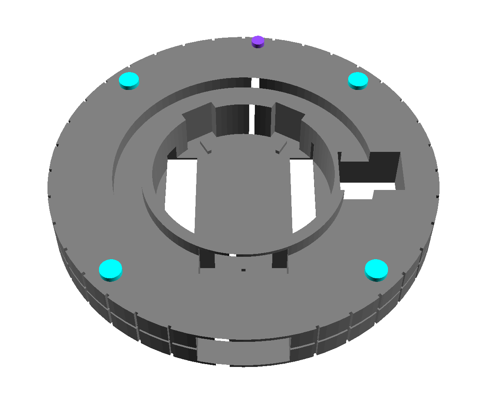
A A A A P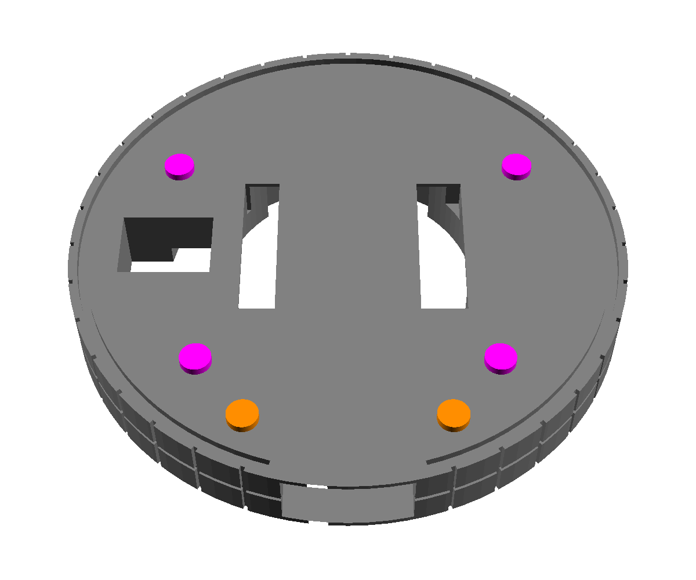
B B B B C C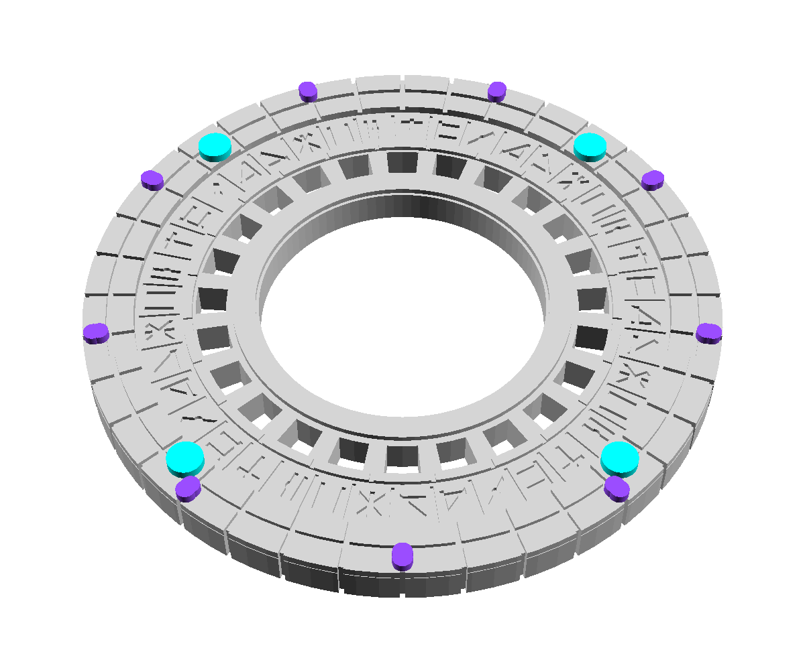
A A A A P P P P P P P P P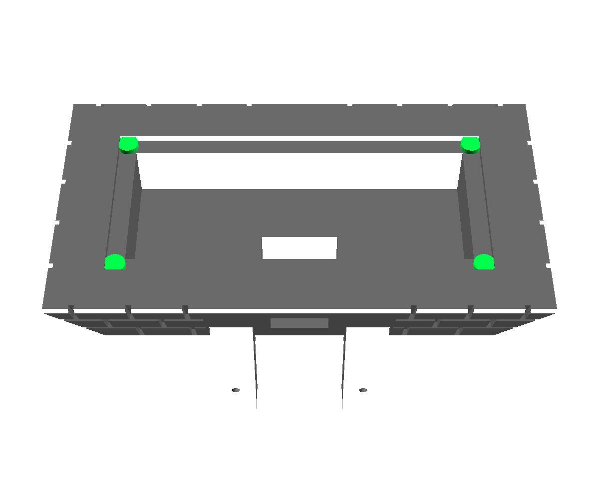
D D D D-
Prep the printed parts
Deburr the pockets. Frost one face of the diffuser with 400–600 grit until it's evenly matte. Snip 19 pins from 1.75 mm filament: 18 × ~2.5 mm (chevrons), 1 × ~3 mm (registration).
Set all 14 M2 heat-set inserts per the maps above: A ×4 in
an M2 screw runs in and out of each insert three times without stripping (that's what coupon A proved)gate_rear's front face, B ×4 + C ×2 in its back face, D ×4 inbase_main's cavity shelf. Keep the iron square — the bosses are 5 mm deep. -
Pin the chevrons
A drop of CA in each of the 18 pin holes on
gate_front's outer ring, pins in, then the nine chevrons over their pin pairs at 40° pitch — one dead at 6 o'clock, on the dock's centreline (v2 clocking, 2026-08-20). Each chevron body bridges the two front-plate screw holes sitting 5° either side of it, so fit chevrons after the front plate is screwed down if you'd rather keep the screws reachable (see step 8). -
Registration pin
Glue the 3 mm pin into the Ø2 blind hole in
gate_rear's front face at 95° (r 52, deliberately off the 10° groove grid). It mates with the hole at 85° on the back ofgate_frontand is the only thing stopping the front plate going on 90° out. -
Seat the screen puck
Drop the Waveshare puck into
puck doesn't rattle; a strip of paper slides under the bezel — glass untouchedgate_rear's Ø51.5 pocket USB-C toward 6 o'clock (the tunnel). Its side buttons should land in the two wall reliefs at 11 and 1 o'clock — if it won't go home, you're a few degrees off. Press the case rim until it sits on the three crush ribs (~0.2 mm preload). -
USB-C extension
Plug the right-angle male end into the puck; the cable drops straight down the 16 × 10 tunnel at 6 o'clock — the gate's only rim opening. Leave the female end hanging for now.
-
LED ring + leads
Lay the 24-LED ring in the annular pocket (OD 74 / ID 58 / 4.3 deep). It should drop in and rotate freely (coupon C). Clock it so its flying leads exit through the 14 mm through-slot at the viewer's 3 o'clock, header side; the leads loop across the open back face into the header cavity. Wire 5V, GND and Din to the puck's rear 8-pin header (or to the WROOM if you're running the shipped firmware), with the 330 Ω spliced into the Din lead at the ring end and the 1N5822 in the 5 V lead, stripe toward the ring — wiring.
Firmware note. With the leads at 3 o'clock, LED index 0 is 6 LEDs away from where the shipped firmware assumes it — a one-constant fix inring.py, still open firmware. -
Diffuser
Frosted face out, on top of the ring. It sits 0.2 mm proud of the pocket on purpose — the front plate preloads it, so nothing rattles and no light leaks between windows.
-
Front plate on
Line the 85° hole up with the registration pin, seat
every LED sits behind its own window; power the ring and look for bleed between windowsgate_front, and drive the 4× M2 × 8 pan-heads at 45/135/225/315° into the front-face inserts. Snug, not torqued — the mullions between windows are 0.6 mm+ lines, not structure. -
Rear cover
Tuck the lead loop and header cavity tidy. Offer up
cover sits flush, no rock, lifts out cleanly before screwing (coupon D)rear_cover: its 1.3 mm lip drops into the recessed groove ongate_rear's back — it only seats where the lip's gap lines up with the USB tunnel arc, so if it rocks, rotate it. On v2 covers each screw runs inside an internal guide boss, so the tip arrives at the insert mouth by itself instead of being fished across the cavity. 4× M2 × 10 countersunk at 30/150/225/315° (v2 angles — v1 prints have 250/290, which the pillars pinch) — the shank crosses the cover's own cavity before it reaches the insert. The gate stack is now one 26 mm drum. -
Cable through the dock
Feed the extension's female end down through the platform drop slot into
base_main's cavity and out the 16 × 14 × 12 rear-wall port. There's no panel socket — the port is a plain through-hole; the female end lives just inside or just proud of the wall, whichever your cable prefers. -
Seat the gate
Lower the stack so its Ø110 rim beds into the two cradle lugs (±30° off bottom, 0.25 mm running clearance) with its back flush against the two rear pillars. Drive the 2× M2 × 20 from behind, straight through each pillar and the cover's pass-through, into
from a normal seated position all 24 windows are visible, including 6 o'clock; the base does not tip under a firm touchscreen pressgate_rear's back-face inserts — on v2 covers the tip runs inside a guide boss for the cavity crossing. Shear load only — nothing side-drives. -
Close the base
Cables inside,
base_bottomon with 4× M2 × 6, rubber feet in their recesses. Plug in at the rear port. On boot the puck (or WROOM) printsring: listening on http://<ip>:80/hook; the ring shows one dim cyan pixel creeping round — idle.
Service: two screws free the gate from the dock; four free the cover for the header; four free the front for the ring or puck. Nothing needs to be cut or unglued except a chevron.
Setup
0Wiring — ring to the Keyestudio ESP32
Three wires. The board is a Keyestudio ESP32-WROOM-32E (Jaycar XC3800); the ring is the Jaycar XC4385.
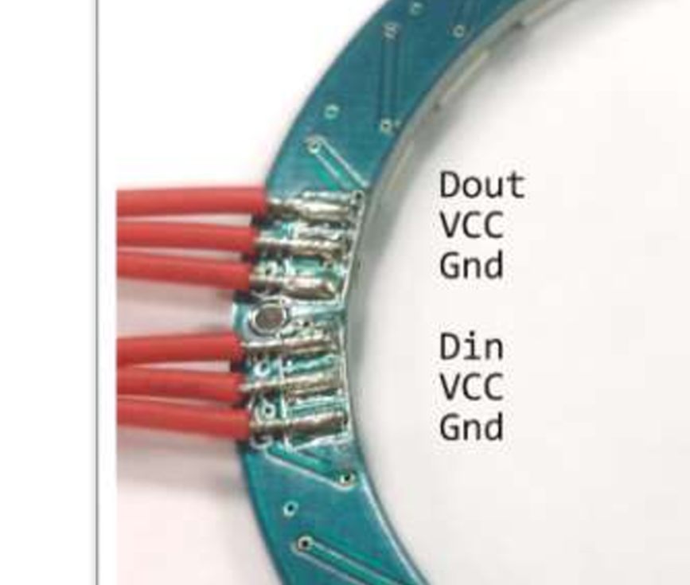
Dout·VCC·Gnd above, Din·VCC·Gnd below. Solder to the Din triplet; the other three leads stay unconnected.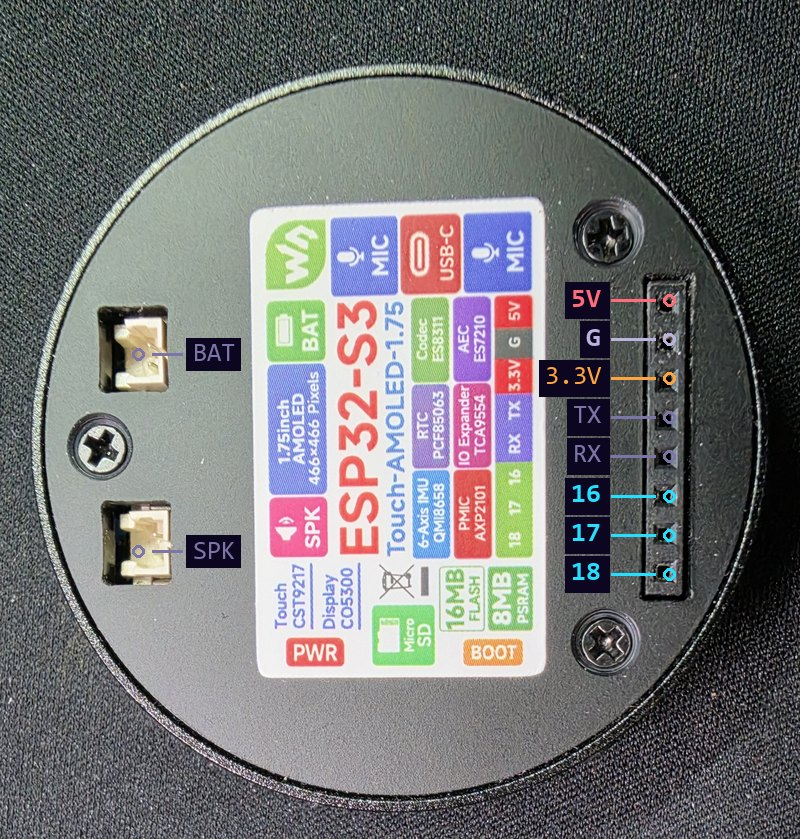
Rotated so the 8-pin header sits at 3 o'clock — the same side as the gate's lead through-slot. On the running build (the
console/ firmware) the ring's three leads terminate here instead of the Keyestudio board: VCC → 5V · Gnd → G · Din → one of GPIO 16 / 17 / 18 (picked at port time — LED_PIN changes to match). The same in-line rules apply: 330 Ω in the Din lead, 1N5822 in the 5 V lead with its stripe toward the ring. RX/TX stay free for serial; 3.3 V is not for the ring. The two MX1.25 JSTs are battery (BAT) and speaker (SPK) — unused here, but the enclosure keeps them reachable.| Ring pad | ESP32 pin | Notes |
|---|---|---|
Din | IO13 — pin 5 from the 5V corner | LED_PIN = 13 in config.py. The 330 Ω goes in this wire, spliced close to the ring. Bare, the board drives 3.3 V data into a 5 V WS2812B — marginal; the 1N5822 below is what makes it solid |
VCC | 5V — pin 1, at the USB end | Not the far end as a standard DevKitC would put it. Between 5V and IO13 sit CMD/SD3/SD2 (SPI flash) — touching them crashes the board, so count carefully: 5V, skip three, IO13, GND. The 1N5822 goes in this wire, stripe toward the ring |
Gnd | GND — pin 6, right after IO13 | Common ground; if you ever add a separate 5 V supply, tie its ground here too |
Dout triplet | — | Leave unconnected — daisy-chain only. Ring underside is two triplets split by a mounting hole: Dout VCC Gnd | Din VCC Gnd; probe the two outermost data pads — no beep = that order, beep = you're reading it backwards |
In-line components
| Component | Goes in | Orientation | Why |
|---|---|---|---|
| 330 Ω 0.5 W resistor | the data wire (IO13 → Din), spliced close to the ring end | None — resistors fit either way round | Damps the reflections/overshoot on the data edge and protects the first LED's input pin |
| 1N5822 Schottky diode | the 5 V wire (5V → VCC) | Polarised. The stripe printed on the body = cathode → faces the ring; the unmarked end faces the ESP32. Fitted backwards the ring simply never lights — annoying but harmless | Drops ~0.3–0.4 V so the ring runs at ≈4.6 V, and the ESP32's 3.3 V data then clears the WS2812B's 0.7 × VDD logic-high threshold (≈3.2 V) with real margin — this retires an earlier flicker caveat |
Power budget: BRIGHTNESS = 24 ≈ 150 mA whole ring, fine on USB; full white would be ~1.4 A. The diode's ~0.4 V drop dims the ring a whisker — invisible at this brightness. For the enclosure build the same three wires go to the Waveshare puck's rear 8-pin header instead — pin choice belongs to the firmware port firmware.
1Flash MicroPython
esptool --port /dev/ttyUSB0 erase-flash
esptool --port /dev/ttyUSB0 -b 460800 write-flash 0x1000 ESP32_GENERIC-*.bin2Configure
cp config.example.py config.py
$EDITOR config.py # WiFi creds; set a STATIC IP — the hook URL is a fixed stringconfig.py is git-ignored. Key knobs: LED_PIN = 13, LED_COUNT = 24, BRIGHTNESS = 24, THEME = "vapor", BACKGROUND_HOLD_MS = 90_000, WORKING_TTL_MS = 1 h, SESSION_TTL_MS = 4 h, optional TOKEN.
3Deploy & find it
./deploy.sh /dev/ttyUSB0
mpremote connect /dev/ttyUSB0 # press RST → "ring: listening on http://<ip>:80/hook"4Wire the hooks — on every machine that runs Claude Code
./install-hooks.sh 192.168.1.200 # merges 9 hooks into ~/.claude/settings.json, timestamped backup first
./install-hooks.sh --remove # undoSafe to re-run — it replaces this ring's hooks rather than stacking duplicates, so a changed IP is just another run. Manual alternative: merge hooks/settings.snippet.json yourself.
5Verify without Claude
curl -s http://<ip>/ # sessions as JSON
curl -sX POST http://<ip>/hook -H 'Content-Type: application/json' \
-d '{"session_id":"test-1","hook_event_name":"Stop"}' # one pink arc starts pulsing
curl -sX POST http://<ip>/clear # forget everythingVerification gates
Renders lie. Every real defect on this build was invisible to renders, assertions and manifold checks — so the pipeline grew a gate for each one it missed.
| Gate | What it catches | Born from |
|---|---|---|
tests.scad asserts (mutation-tested) | fits, fouling, cavity clearances, saddle-floor ≥ 2 mm, 360° window visibility, end-wall coplanarity (scalar triple product) | an assertion that cannot fail is decoration — each was broken on purpose once |
.echo ERROR grep | OpenSCAD 2021.01 exits 0 on assertion failure | — |
tools/count_shells.py + per-shell z-min | multi-body exports, plates floating above the bed | coupon A printed twice as air; earlier an ASCII STL read as 538 M triangles → 220 GB commit → OOM, twice |
tools/interference_check.py (trimesh + manifold3d) | base ∩ gate stack = 0 mm³ | the CGAL version returned "empty" on failure and passed for six steps |
tools/seating_check.py | rear_cover ∩ gate_rear = 0, gate_front ∩ gate_rear = 0, each placed per assembly.scad | a lip flare collided 0.86 mm and no gate looked within the stack |
tools/overhang_check.py | downward faces past the 45° rule with > 2.5 mm reach; revolved tapers measured radially | a 5 mm cantilever under the flank feet |
| Coupons A–D | the physical fit of every clearance before a shell prints | the engineering print: ring bound at 0.3/side, "press-fit" diffuser was a bug |
Lessons carried forward (from enclosure/README.md): fit-check dynamically, not drop-in; thickness-sensitive features need a thickness assert because boolean gates don't measure walls; any gate that treats empty output as PASS must first grep for ERROR; allow-list boxes make gates blind — use semantic rules; a hull of a flat footprint against a tilted top cannot have planar ends, so widen the deck instead of modelling a twist.
The build, on the desk
Printed, assembled, and running — 2026-08-20. The ring is live on the LAN at 192.168.1.200 and the puck's round screen shows the session count, waiting/working split, and a LIGHTS toggle.
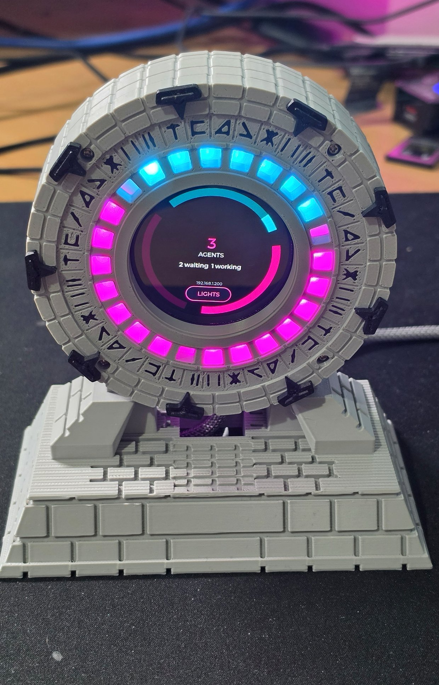
vapor theme — two sessions pulsing pink for input, one cyan comet working. Bottom chevron clocked to the dock's centreline (see finding 1).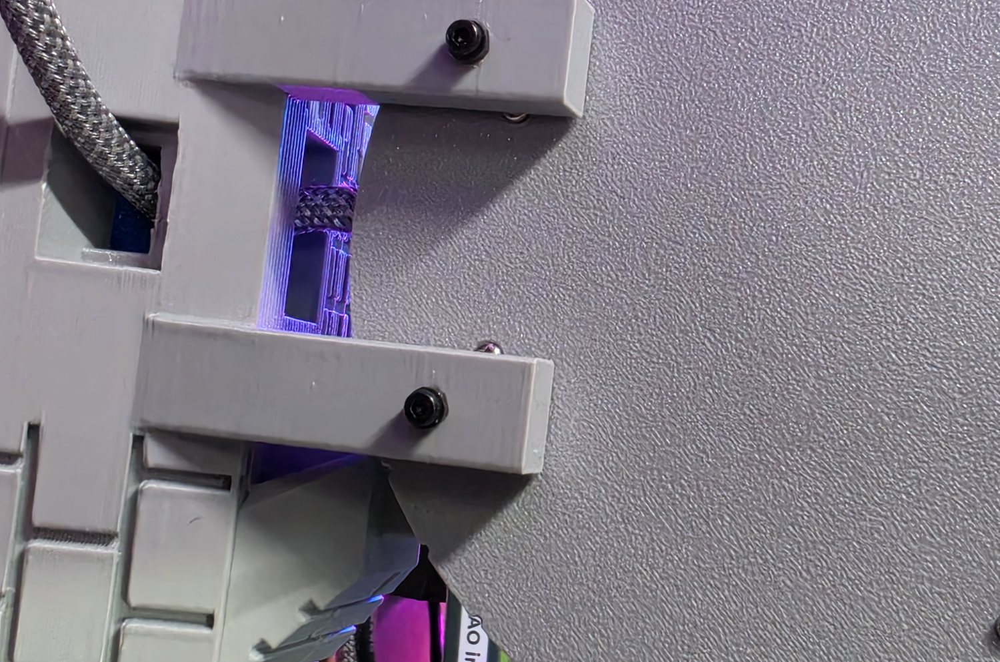
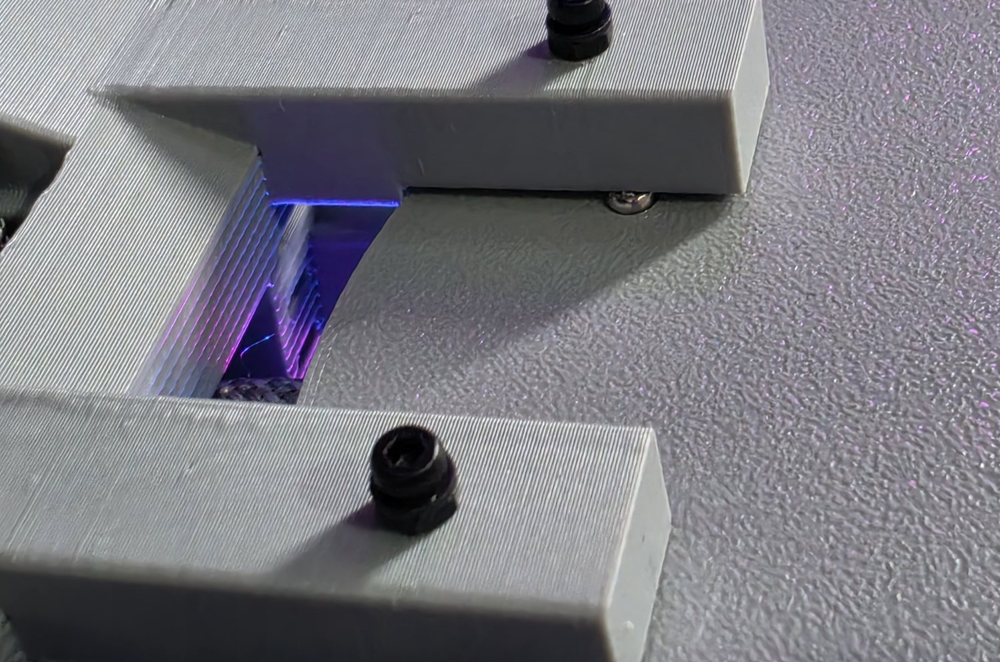
Field findings → v2 fixes (reprinted: the build in the video runs on them)
| # | Finding on the printed build | Fix in the CAD | Parts reprinted |
|---|---|---|---|
| 1 | Narcosia clocked the front so a chevron sits at the bottom, aligned with the dock's centreline — better than the drawn one-at-12 layout, but the designed registration pin fights it and the bottom chevron ends up slightly off BDC | Chevron pattern rotated 180°: loops are now 270 + k·40, so the pinned, designed clocking puts one chevron exactly at 6 o'clock and centres the gap at 12. Pin stays at 95° | gate_front (pin holes move) + re-pin chevrons |
| 2 | The puck doesn't sit perfectly vertical in its pocket, so the USB plug binds in the 16 mm rim tunnel — no room to trim the screen's clocking | USB_W 16 → 22 (+3 mm per side; tunnel cut 24). Rim-tick skip unchanged; registration skip arcs re-derive automatically | gate_rear |
| 3 | The rear-cover countersunk screws at 250°/290° sit ~2° clear of the pillars (245°/295° ± 7.6°) — the printed pillars land on the screw heads | REAR_COVER_HOLE_ANGLES [30, 150, 250, 290] → [30, 150, 225, 315] — the long-deleted tab angles, 9.2° (~6.4 mm) clear of the pillars, flip-symmetry and one-way rotational asymmetry preserved | gate_rear + rear_cover |
| 4 | Starting the four cover screws is fiddly — each tip crosses 4.2 mm of open cavity blind before finding its hidden insert, bearing on the thin 1.8 mm floor when tightened | Internal guide bosses ×6: Ø6 tubes (Ø9 base collars) at the four cover screws and both pillar pass-throughs continue each bore across the cavity, tips 0.3 mm clear of gate_rear so the lip still defines seating; heads now clamp a 5.7 mm column — this matters most for the pillar M2×20s, the gate's only retention, whose clamp previously bowed the floor into 4.2 mm of air | rear_cover (already on the list) |
| 5 | Slicer review of the v2 base: the flared plinth reads as a lip; the deck brickwork stops 15 mm short of the side edges; the flanks are only coursed on their outboard cap | Plinth deleted (wall runs straight to the bed); deck course lines extended to the side arris and 2 mm over it so they meet the end-wall courses (joints stay capped on-deck); flank front/rear faces coursed with the cap's own band heights so the pattern wraps right around | base_main |
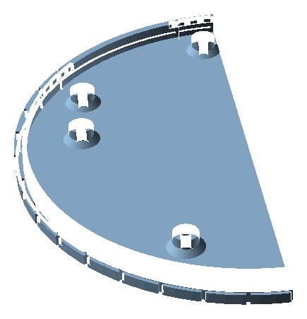
All four passed the full pipeline (manifold, shells, interference, seating, overhang, mutation-tested asserts). All five went into the v2 reprint, which is the build running in the video. (Findings 1–3 are field findings from the assembled build; 4 is a usability improvement made at the same time.)
Status & open items
Done
- Firmware: multi-session arcs, background window, three themes, TTL pruning, WiFi reconnect, hook installer
- Whole build printed, assembled and RUNNING on the desk (2026-08-20) — ring live at 192.168.1.200, the puck's screen showing per-state session counts + a LIGHTS toggle (first light)
- Enclosure CAD: 7 parts, decoration complete, 22 review rounds, whole-build PRINT verdict 2026-08-18
- v2 reprint done: gate_rear, rear_cover, base_main and gate_front with all five field fixes, assembled and running
- Coupons A, B, C, D printed and passed; screen pocket, LED pocket, lead slot, registration lip all
CONFIRMED - Two-colour front via 3MF (face + glyph ink), overlap-proved
- S3 firmware at
console/— Arduino/C++, same hooks/protocol/semantics; screen + ring from one board, the ring on the expansion header. The repo root stays the MicroPython/WROOM original
Open
- dims
config.scadstill labels the USB tunnel, glyph ink depth and theDOCK_*/RIM_*/FLANK*/HULL_*values PROVISIONAL: they work on the printed build but weren't individually caliper-checked. Screw lengths (8/10/20/6) are derived from the CAD - agents Codex and other coding agents: the device only needs an HTTP POST carrying
session_id+hook_event_name, so each one needs a small adapter from its own hook/notify system - roadmap buttons (on order): press to acknowledge a pulsing arc; per-host colour tinting so you can tell which machine wants you; a kawoosh through the puck's MX1.25 speaker, one day
Where things live
| Path | Purpose |
|---|---|
main.py · ring.py · sessions.py · wifi.py | HTTP server + event classification + animation loop · LED painters · session registry/expiry/ordering · connection |
config.example.py · deploy.sh · install-hooks.sh · hooks/settings.snippet.json | template config · copy firmware + reset · merge/remove the nine hooks · the hook block itself |
enclosure/config.scad | Every dimension, tolerance and flag, each CONFIRMED or PROVISIONAL — the single source of truth |
enclosure/{gate_front,gate_rear,diffuser,rear_cover,chevron,base_main,base_bottom}.scad | one export file per printable part; parts.scad = component models; decor.scad = shared brickwork/glyphs; assembly.scad, stack_view.scad, exploded_view.scad, insert_map.scad = view only |
enclosure/tests.scad · enclosure/render.ps1 · enclosure/tools/ | invariants · the pipeline · the mesh gates (count_shells, interference_check, seating_check, overhang_check, make_3mf) |
enclosure/couponA–D.scad | fit coupons |
enclosure/DESIGN.md · MEASUREMENTS.md | decision ledger · caliper worksheet |
enclosure/print/ · enclosure/renders/ | pipeline output — git-ignored, regenerated every run |
docs/ | this page + its renders |
console/ | the successor firmware actually running on the desk build : Arduino/C++ for the ESP32-S3 puck — claude-status-console.ino + ring/ui/layout/motion/sessions/server modules, its own README/docs/tools |